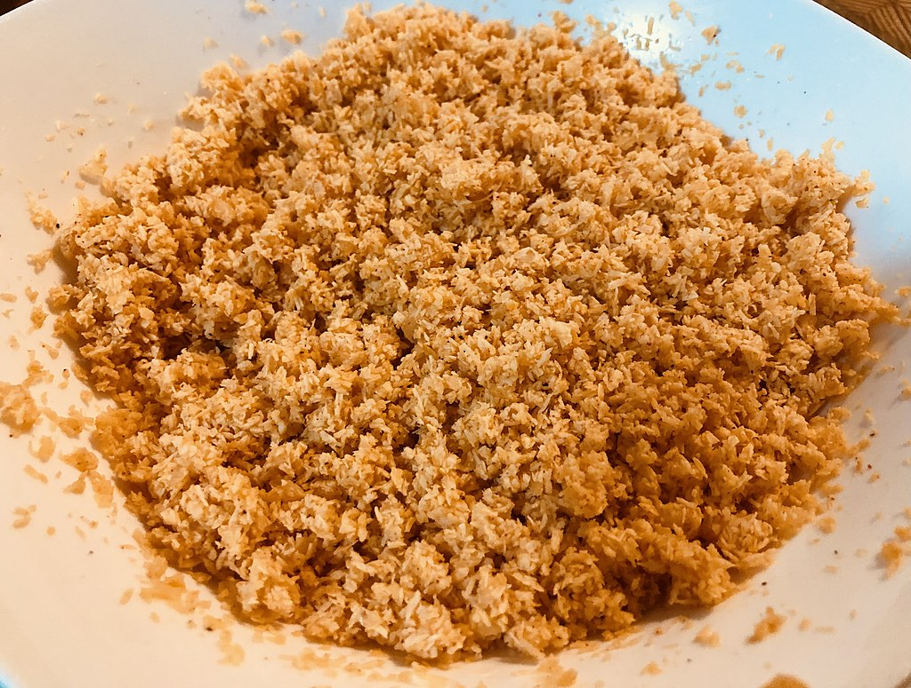
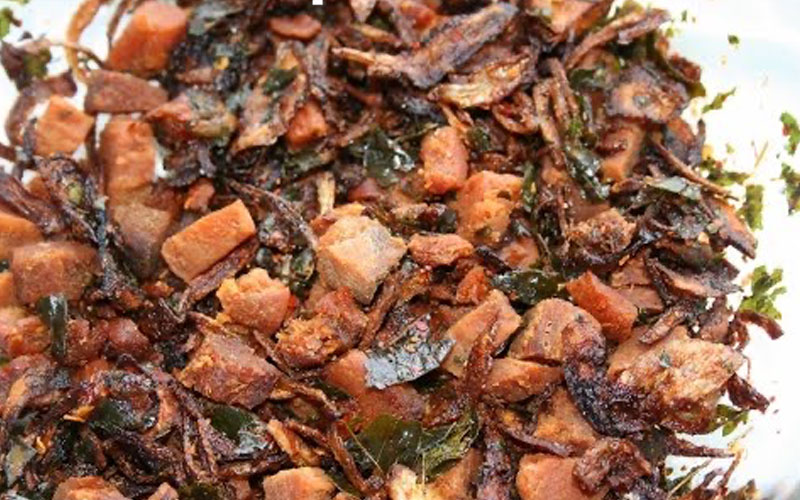
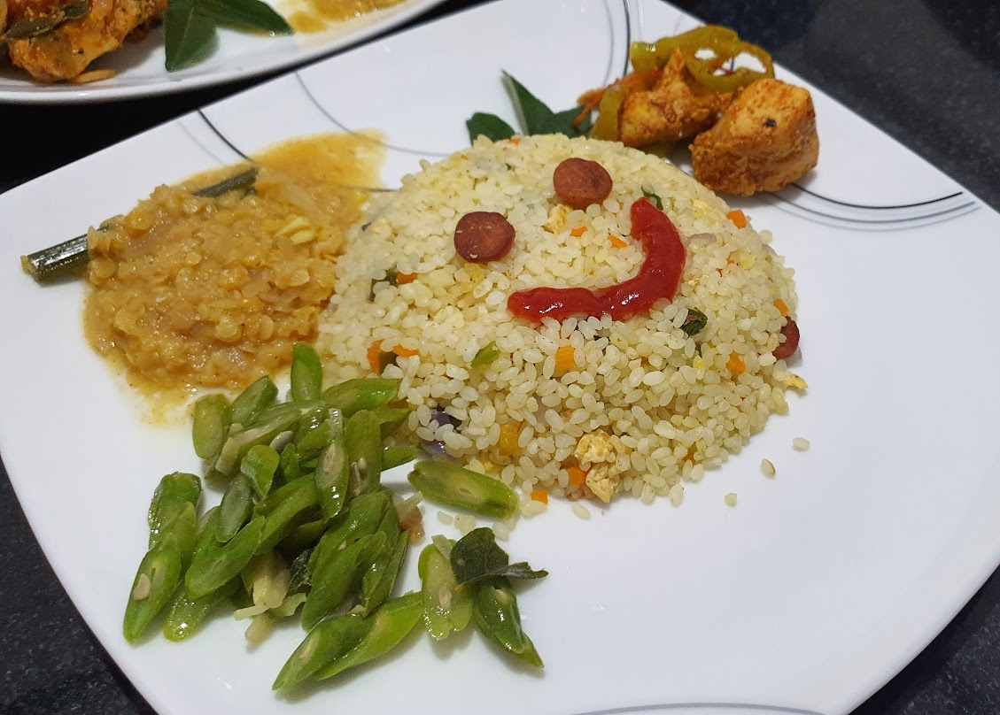

Featured Recipes

Pol Sambol
A home made dish of Pol Sambol, comprising onions, desiccated coconut, chilli, paprika and lemon juice. It is served as an accompaniment to curry and rice.
View Recipe →

Dried Fish
Dried fish is a versatile food option that can be added to meals when one wants a change from meat and fish. Back then dried fish was a popular dish which was a method of preserving fish.
View Recipe →

Fried Rice
Fried rice is a popular and versatile dish that can be enjoyed as a main course or a side dish. It is a staple in many Asian cuisines and can be easily customized to suit individual tastes
View Recipe →